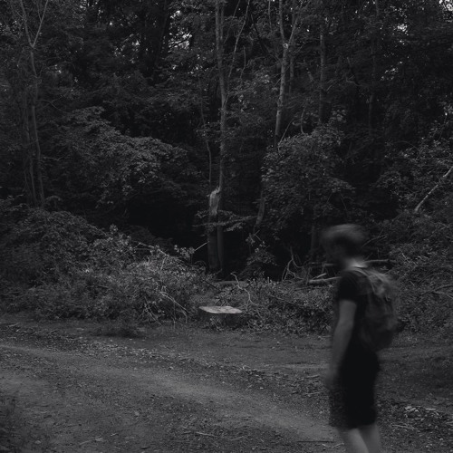

Tom Torment
"Sorrow"
Youtube
Soundcloud

Tom Torment - Sorrow
1. Intro
2. Riding through the city at night
3. It rains where you are not
4. Interlude
5. Leaving
6. When will you realize
Everything written and produced by Tom Torment